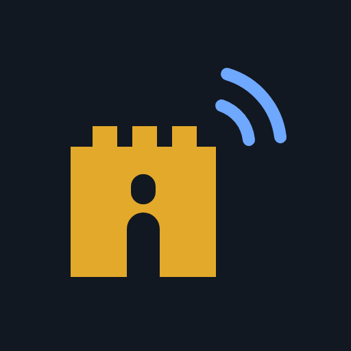
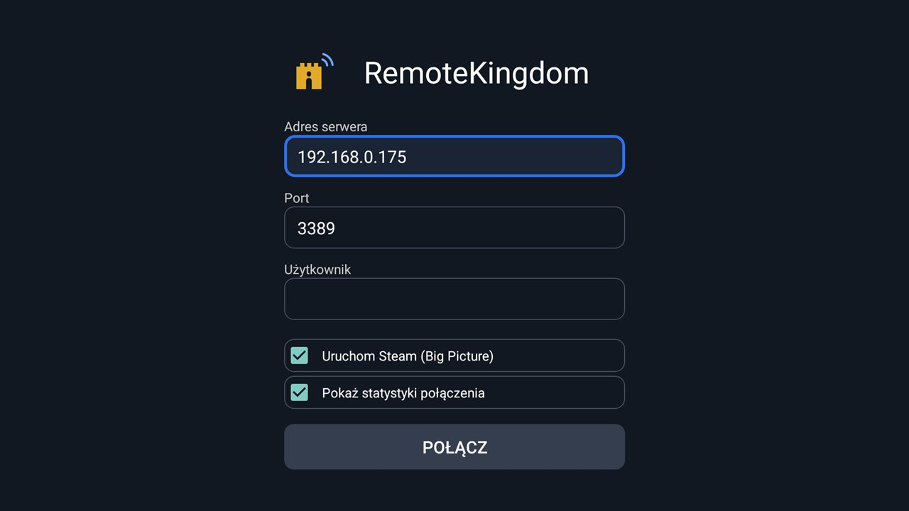
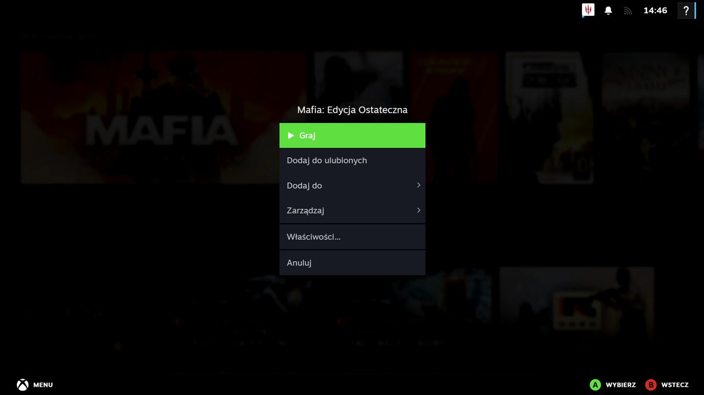
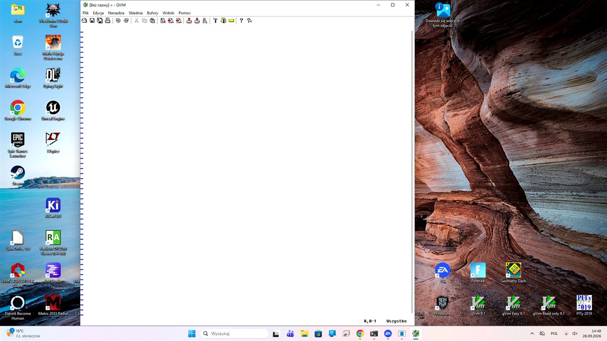

RemoteKingdomRemoteKingdom przenosi pulpit i gry z komputera z Windows na telewizor z Android TV lub Google TV. Obraz, dźwięk, pilot i pad – bez kabla HDMI przez cały pokój.
Serwer: Windows 10 lub 11 (64-bit). Aplikacja: Android TV / Google TV, telefony i tablety. Działa na standardowym protokole RDP – co działa z innymi klientami i serwerami.

Obraz kodowany sprzętowo jako H.264 na komputerze i dekodowany sprzętowo przez telewizor – do 60 klatek na sekundę.
Pad podłączony do telewizora (np. od PlayStation 4) działa na komputerze jak kontroler Xbox, razem z wibracjami.
Jakość obrazu sama dostosowuje się do Wi-Fi, żeby obraz nie stawał przy słabszym połączeniu.
Wszystko, co gra na komputerze, słychać na telewizorze.
Pilot od telewizora wystarczy do obsługi (długie OK włącza tryb myszy). Działa też mysz i klawiatura podłączone do TV.
Połączenie szyfrowane (TLS). Telewizor łączy się dopiero po sparowaniu kodem PIN pokazanym na komputerze.
Aplikacja łączy się również z wbudowanym Pulpitem zdalnym Windows (Windows Pro), także z logowaniem NLA. Uwaga: połączenie z domowym Windowsem wylogowuje osobę siedzącą przy komputerze – Windows kliencki ma tylko jedną sesję. Do pracy na pulpicie wystarczy; do gier i filmów lepszy jest serwer RemoteKingdom.
Działa na Android TV i Google TV, a także na telefonach i tabletach z Androidem 7 lub nowszym – w pionie i w poziomie.
Aplikacja mówi w języku telefonu lub telewizora: po polsku albo po angielsku.
RemoteKingdom mówi zwykłym protokołem Pulpitu zdalnego (RDP), więc działa w obie strony: z serwerem możesz łączyć się innymi klientami RDP, a aplikacją na TV – z komputerem bez naszego serwera. Pełny zestaw funkcji daje jednak dopiero para: aplikacja RemoteKingdom + serwer RemoteKingdom.
| Aplikacja RemoteKingdom + serwer RemoteKingdom |
Inny klient RDP (np. mstsc) + serwer RemoteKingdom |
Aplikacja RemoteKingdom + Pulpit zdalny Windows |
|
|---|---|---|---|
| Obraz | H.264, do 60 kl./s | H.264, jeśli klient go obsługuje (mstsc tak), inaczej zwykłe bitmapy | Zwykłe bitmapy – do pracy, nie do gier i filmów |
| Dopasowanie do sieci | Tak | Tylko przy obrazie H.264 | Nie |
| Dźwięk | Tak | Tak | Jeszcze niesprawdzony |
| Mysz i klawiatura | Tak, także pilot | Tak | Tak, także pilot |
| Pad jak kontroler Xbox | Tak, z wibracjami | Nie | Nie |
| Logowanie | Parowanie kodem PIN, potem automatycznie | Konto Windows (ekran logowania serwera) | Konto Windows, także NLA |
| Steam Big Picture, zrzuty z pada, ping w statystykach | Tak | Nie | Nie |
| Wymagany Windows | 10 lub 11, także Home | 10 lub 11, także Home | Pro, Enterprise lub Education z włączonym Pulpitem zdalnym |
Sprawdzone z klientem mstsc (Podłączanie pulpitu zdalnego w Windows). Inne klienty RDP (np. aplikacja Windows App na macOS, iOS i Androida, FreeRDP, Remmina) i inne serwery RDP (np. xrdp na Linuksie) powinny działać podobnie, ale nie były jeszcze testowane.


RemoteKingdom na Android TV i Google TV – obsługiwany w całości pilotem.
Pobierz instalator na komputer z Windows i uruchom go. Serwer włączy się sam i będzie startował po zalogowaniu. Gdy działa, jego ikona jest w zasobniku obok zegara – jej menu pokazuje adres komputera, połączone urządzenia i pozwala zakończyć serwer.
Znajdź RemoteKingdom w Google Play na telewizorze i wybierz „Szukaj serwerów” albo wpisz adres IP komputera (np. 192.168.0.10).
Za pierwszym razem na komputerze pojawi się 6-cyfrowy kod – wpisz go na telewizorze. Kolejne połączenia są już automatyczne.
Aplikacja RemoteKingdom jest teraz w zamkniętych testach w Google Play. Aby wziąć w nich udział, kliknij link zapisów, zaakceptuj zaproszenie i zainstaluj aplikację na telewizorze, telefonie lub tablecie z Androidem.
Do udziału w testach potrzebne jest konto Google.
Sprawdź, czy serwer działa na komputerze (ikona RemoteKingdom w zasobniku obok zegara; jeśli jej nie ma, uruchom „RemoteKingdom Server” z menu Start), czy adres IP jest poprawny i czy komputer i telewizor są w tej samej sieci. Serwer używa domyślnie portu 3389. Jeśli przy uruchamianiu serwera pojawia się okno o brakującym pliku MFPlat.dll, na komputerze brakuje biblioteki Media Foundation – patrz „Wymagania i porady”.
Na tym samym porcie działa też wbudowany Pulpit zdalny Windows. Jeśli masz go włączonego, serwer RemoteKingdom nie wystartuje – zakończy się po cichu, a aplikacja pokaże tylko, że nie może się połączyć. Żeby to naprawić, wyłącz Pulpit zdalny (Ustawienia → System → Pulpit zdalny) albo uruchom serwer RemoteKingdom na innym porcie – numer portu podaje się jako pierwszy argument (np. 3390). Jeśli serwer nie startuje, zajrzyj do pliku %LOCALAPPDATA%\RemoteKingdom\rk_server.err: znajdziesz tam wpis [Main] Fatal: bind() failed: 10048.
Najprościej: w aplikacji wybierz „Szukaj serwerów” albo kliknij ikonę RemoteKingdom w zasobniku na komputerze – menu pokazuje „Adres tego komputera”. Można też otworzyć Ustawienia Windows → Sieć i Internet → właściwości połączenia i odczytać „Adres IPv4” albo wpisać ipconfig w wierszu poleceń.
Tak. Jeśli Pulpit zdalny nie ma zapisanego hasła, po połączeniu pojawi się ekran logowania RemoteKingdom – wpisz nazwę użytkownika i hasło konta Windows tego komputera (dla konta Microsoft: adres e-mail i hasło konta, nie PIN). Po 3 błędnych próbach serwer się rozłącza.
PIN i Windows Hello nie działają w sesji zdalnej – ekran logowania pokazuje tylko hasło i kartę inteligentną. Wpisz hasło konta Windows (dla konta Microsoft: hasło konta, nie PIN).
Przy koncie Microsoft z włączoną opcją „wymagaj Windows Hello” logowanie przez Pulpit zdalny samym hasłem również potrafi nie zadziałać. Pomaga wtedy wyłączenie tej opcji albo jednorazowe zalogowanie się hasłem lokalnie na tym komputerze.
Tak, jeśli komputer ma Windows Pro z włączonym Pulpitem zdalnym (Ustawienia → System → Pulpit zdalny). Aplikacja poprosi o nazwę użytkownika i hasło konta Windows. Domyślnie hasło nie jest zapisywane. Możesz je zapamiętać, zaznaczając opcję w oknie logowania – hasło jest wtedy przechowywane zaszyfrowane kluczem urządzenia. Pad, parowanie PIN-em i obraz H.264 działają tylko z serwerem RemoteKingdom.
Tak, jeśli łączysz się z komputerem przez wbudowany Pulpit zdalny Windows (Windows Pro). Windows kliencki ma tylko jedną sesję, więc osoba siedząca przy komputerze zostanie wylogowana. Serwerowe wersje Windows pozwalają na kilka sesji jednocześnie, ale domowy Windows 10/11 Pro – nie.
Tak się dzieje po ponownej instalacji serwera lub Windowsa. Jeśli to Twój komputer i nic nie zmieniałeś, a pytanie się pojawiło – wybierz „Nie” i sprawdź, czy łączysz się z właściwym adresem.
Przytrzymaj Wstecz, aby się rozłączyć. Przytrzymaj OK, aby włączyć tryb myszy: strzałki przesuwają kursor, OK klika.
Instalator nie jest jeszcze podpisany certyfikatem. Kliknij „Więcej informacji” → „Uruchom mimo to”. Pobieraj instalator tylko z tej strony.